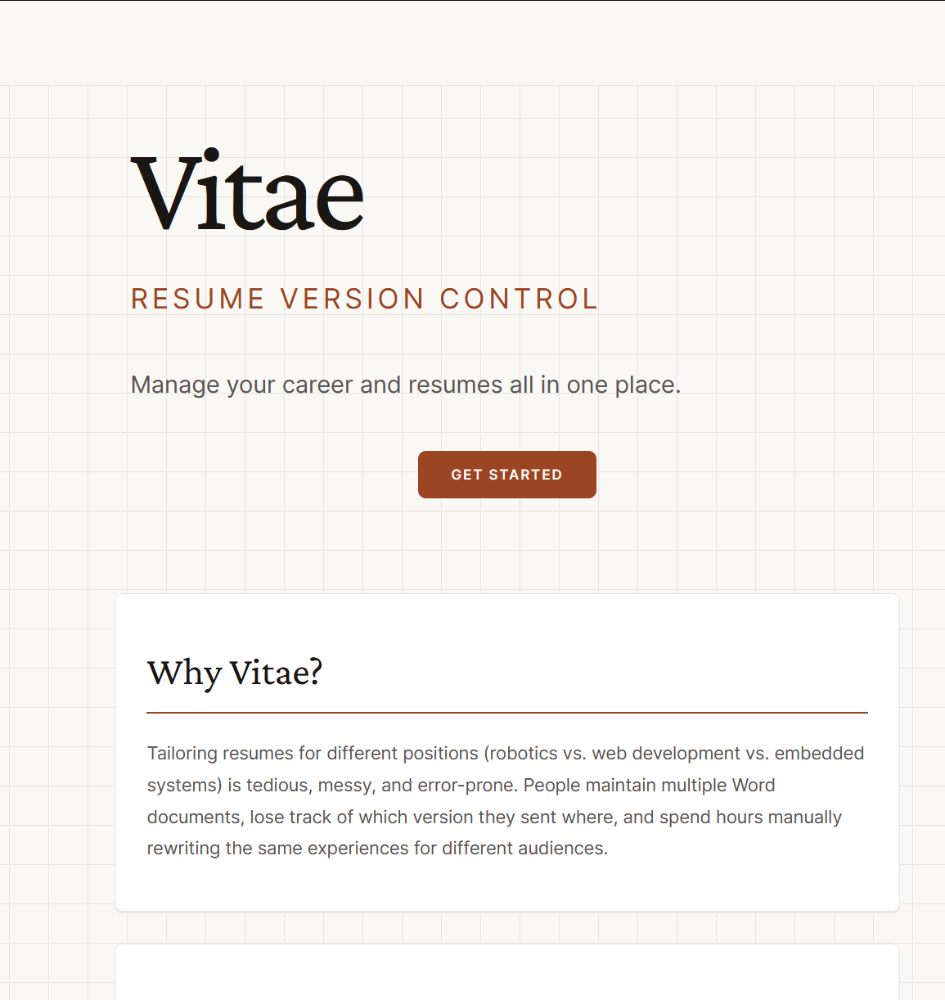

Full-Stack Web Application · Role: Frontend Developer · Team Project
A resume version control platform that lets users manage their career history and generate tailored resumes in one place. Built with a modern full-stack using Next.js, React, TypeScript, and PostgreSQL.

Vitae solves the problem of maintaining multiple resume versions for different job applications. Instead of juggling several Word documents, users build a single career history and generate tailored resumes from it. The platform supports drag-and-drop section reordering, multiple resume templates with live preview, and PDF export.
Next.js · React · TypeScript · Tailwind CSS · PostgreSQL · Docker · REST API · Lucide React · React Hot Toast · Custom Hooks
Built the landing page using Next.js, React, and Tailwind CSS. Implemented navigation to the career history page and the initial canon item form so users can start adding career entries right away.
Implemented the career history page UI where users fill out and submit canon items. Submitted items render below the form so users can review their full career history at a glance.
Built the drag-and-drop section reordering system on the resume builder page, enabling users to move entire resume sections and reorder items within each section to match their preferences.
Engineered a live template selector UI — clicking a template immediately updates both the on-screen resume preview and the exported PDF download, giving users real-time visual feedback.
Kept the frontend lean by building custom React hooks instead of reaching for additional libraries, reducing bundle size and keeping the codebase maintainable.
Integrated Lucide React icons and React Hot Toast notifications throughout the application to provide consistent, lightweight feedback across all user interactions.
Copyright © Keith Tran.